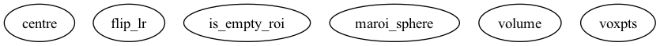

Master index
Index for marsbar/@maroi_sphere
Dependency Graph for marsbar/@maroi_sphere

Generated on Sun 26-Sep-2021 01:00:54 by
m2html
© 2003-2019
 Master index
Master index Master index
Master index